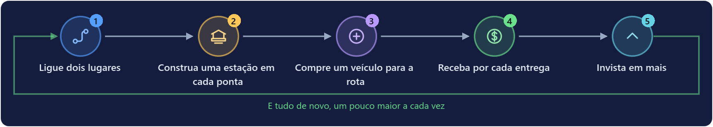

Como o jogo funciona
O que você faz e como uma empresa cresce.
Você dirige uma empresa de transporte. Você leva passageiros, correio e carga de onde eles surgem até onde são necessários, e recebe quando eles chegam.
Como uma empresa cresce


- Ligue dois lugares por estrada, trilhos, mar ou ar.
- Construa uma estação em cada ponta.
- Compre um veículo e dê a ele suas paradas.
- Receba por cada entrega: quanto mais longe e mais rápido, mais.
- Gaste em mais rotas, veículos melhores e estações maiores.
Você começa com $ 250.000 no banco, tudo emprestado. O banco empresta mais quando você precisar.
Para onde ir agora
- Início rápido: um trem de carvão, do zero até o primeiro pagamento.
- A tela: o que há na tela e como entender.
- Como você recebe: por que uma entrega paga mais do que outra.
- Cadeias industriais: qual indústria abastece qual.
- Solução de problemas: o que verificar quando algo não funciona.
Como usar este guia
- Pressione H a qualquer momento para abri-lo ou fechá-lo.
- As palavras coloridas são links. A seta na barra de título, ou Backspace, volta à página de onde você veio.
- A caixa à esquerda (Ctrl+F) lista todas as páginas que mencionam uma palavra. Enter abre a primeira.
- . e , passam para a próxima página e para a anterior, como os botões embaixo.